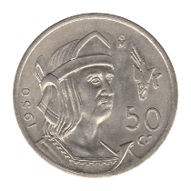
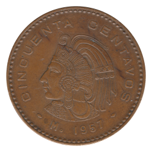

Fifty Centavos
First Series
Large Type
1906-M
1913-M
Small Type
1920-M
1921-M
1945-M
Second Series
 1950-Mo
1951-Mo
Third Series
Large Type
1956-Mo
 1957-Mo
1959-Mo
Small Type
1964-Mo
1965-Mo
1966-Mo
1967-Mo
1968-Mo
 1969-Mo
1969-Mo
1970-Mo
1971-Mo
1972-Mo
1975-Mo With Dots
1975-Mo No Dots
1976-Mo With Dots
1976-Mo No Dots
1979-Mo Square 9
1980-Mo Round 9
1982-Mo
1983-Mo
Fourth Series
1983-Mo
Back to Mexico
Back to Home